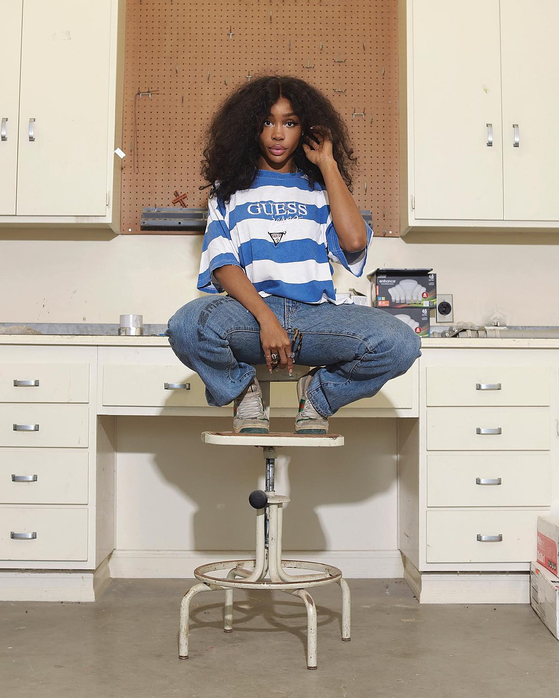

Solána Imani Rowe (born November 8, 1989), known professionally as SZA (/ˈsɪzə/), is an American singer and songwriter. Born in St. Louis, Missouri, she began making music in the early 2010s, releasing two extended plays before signing with the hip hop record label Top Dawg Entertainment, through which she released Z, her third EP and first retail release.
SZA's debut studio album, Ctrl (2017), was released to universal acclaim from music critics. It debuted at number three on the US Billboard 200 and was certified platinum by the Recording Industry Association of America (RIAA). At the 60th Annual Grammy Awards, the album earned her four nominations, including Best New Artist. In 2020, it was placed on Rolling Stone's 500 Greatest Albums of All Time list. In August 2017, she was featured on Maroon 5's Top 10 hit single "What Lovers Do". The next year, she collaborated with Kendrick Lamar to create "All the Stars" for the Black Panther soundtrack; for which she was nominated for the Golden Globe Award and the Academy Award for Best Original Song.[8] In 2021, she released the single "Good Days", and featured on Doja Cat's "Kiss Me More", both of which reached the top 10 on the Billboard Hot 100, with the latter breaking the record for the longest running all-female top 10 hit. (Wikipedia)
